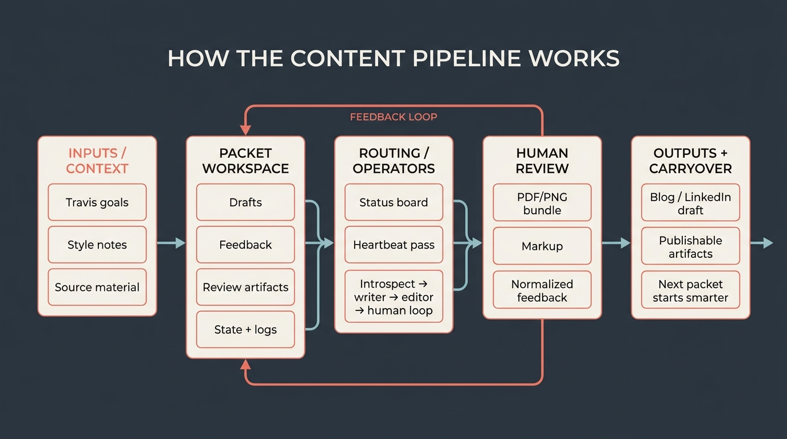

Project update · May 2026
I’m building a self-improving content-generation pipeline in OpenClaw: something that remembers my preferences, learns from feedback, feels like my writing, and can regularly produce blog posts and LinkedIn drafts without making me rebuild the context every time.

ChatGPT and Claude can absolutely draft, revise, and brainstorm. The gap is not model capability in a single session. The gap is the operating system around the model: durable project memory, review history, persistent packet artifacts, specialist routing, scheduled cadence, and enough workflow control that the next pass picks up from what happened previously instead of whatever I remember to paste into a chat box.
That is why I’m building this in OpenClaw. I want custom pipelines where files, skills, heartbeats, subagents, and review channels become an inspectable editorial system. Not “ask an AI to write something every Monday.” More like: keep a packet for every article, track its state, route work to the right specialist, preserve feedback, and make the next run smarter.
Each post gets a small workspace with the source material, drafts, feedback, review artifacts, and current state. OpenClaw uses that workspace to decide what should happen next: research, writing, editing, visual prep, or human review.
A heartbeat/operator pass can inspect the board, advance one safe step, update the packet, and stop. That bounded loop matters. It keeps the system from turning into an uninspectable blob of agent work, while still letting the pipeline keep moving without me manually orchestrating every handoff.
Feedback does not disappear into a chat scrollback. Marked-up PDFs, review notes, rejected directions, style preferences, diagram decisions, and “please don’t write like that again” all become artifacts the next pass can read. Over time, the system should preserve more of my taste across documents: what I like, what I reject, what level of specificity I expect, and where previous drafts went off the rails.
This post is one test case of the workflow, but the real point is broader than this post. I’m trying to make content creation work less like repeatedly starting a new AI chat and more like operating a small editorial machine with memory, roles, review loops, and a visible state board.
If it works, future drafts should need less setup, carry forward more of the last review, and get to something I would actually publish in fewer rounds.
How am I planning to track that? I made a dashboard. By tracking review rounds per post, I can measure whether the pipeline is getting better at matching my taste and meeting my standards.